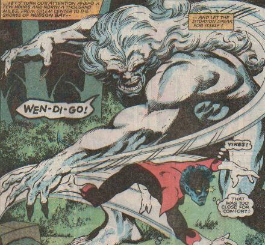

Wendigo
The Wendigo is a mystical curse that befalls the man who eats the flesh. Eating the flesh causes one to become a gigantic beast. The Wendigo is immortal as a spirit. The Wendigo cannot be killed, only hurt or stunned. Several men have been afflicted with the curse of the Wendigo, but each time the spirit of the Wendigo is the same.